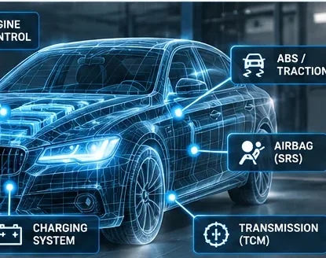

FIND THE ROOT CAUSE / FIX IT RIGHT
Advanced automotive diagnostics.
Demonstrate a careful, systematic approach to complex faults.

DIAGNOSTIC PROCESS
Evidence before estimates.
01
Listen & inspect
Understand the concern.
02
Scan & analyze
Read system information.
03
Test & confirm
Verify the suspected fault.
04
Explain & repair
Offer understandable options.
INTERACTIVE WARNING GUIDE
What does that warning light mean?
Choose a common indicator. Explanations are educational examples and not vehicle diagnoses.
An illuminated engine warning can have several causes. Reading fault codes is the first step, not a complete diagnosis.
{pic(id,'detail',alt='Illustrative automotive workshop equipment')}
{section('The tools support the thinking.','SHOP CAPABILITIES','A credible diagnostics site explains what tests are performed and which systems it actually supports.')}{info('diagService',[('Electrical','A qualified technician uses systematic tests to trace electrical concerns.'),('Drivability','Analysis may include live data, mechanical checks, and a road test.'),('Network faults','CAN bus and module issues require professional testing and vehicle-specific procedures.')])}
{section('Start with the symptom.','CONTACT THE SHOP','The live version would capture year, make, model, symptoms, and permission to contact.')}
{demoform('diagnostic inquiry','Describe a vehicle concern',['Check engine light','Electrical issue','Starting problem','Other symptom'])}